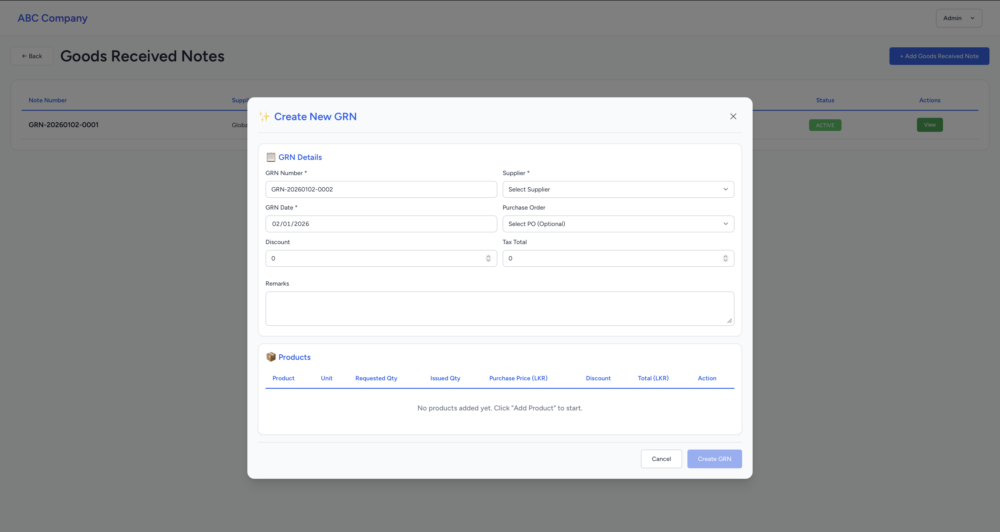

Goods Received Notes (GRN)
Record all incoming stock to maintain accurate inventory levels.
Creating a GRN
A Goods Received Note records products received from suppliers and automatically updates inventory stock levels in the system.
- Navigate to Purchasing & Stock → Goods Received Notes
- Click "Create New GRN" or "Add New Goods Received Note"
- Fill in the GRN header information:
- GRN Number: Auto-generated unique identifier
- Supplier: Select the supplier providing the goods (required)
- GRN Date: Date goods were received (required)
- Purchase Order: Link to related POR
- Discount: Apply overall discount if applicable
- Tax: System calculates tax based on configured rates
- Remarks: Add notes or special instructions
- Add products to the GRN table:
- After selecting a Purchase Order Number, products are automatically populated from that PO
- When a PO is selected, you cannot add new products - only the PO items will appear in the table
- You can only modify the received quantity for products already in the PO and remove the unnecessary products.
- Enter received quantity (in purchase units)
- Verify unit price is correct
- System calculates line totals automatically
- Review all information for accuracy
- Click "Create GRN" to finalize and update inventory
📸 Screenshot: grn-create.png
Place your GRN creation screenshot here
'">
Place your GRN creation screenshot here